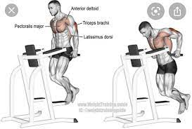
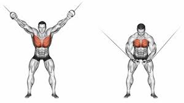
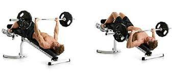
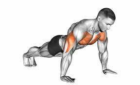

- Chest Dip

Muscles Worked/benefits
- triceps
- pecs
- anterior deltoids (front shoulder muscles)
- latissimus dorsi
Equipment needed
Any of these options will work for chest dips:
- tricep dip machine/station
- dip bar
- parallel bars
Steps
- Grasp a parallel bar or the handles of a dip station.
- Raise your body but keep your elbows soft.
- Lean your chest forward and keep your feet behind your body.
- Lower your body until triceps are parallel with the bar.
- Press back up into the raised position.
- Lower and repeat.
- Cable crossover

Muscles worked/benefits
- pectoralis major
- anterior deltoids
- latissimus dorsi
Equipment needed
You're goona need a cable machine for this one
Steps
- Place the pulleys in a high position and choose a mid-range weight
- Hold a handle in each hand.
- Take a step forward and plant your foot firmly into the ground.
- Lean your torso forward and engage your core.
- Extend your hands in a wide arc and breathe in.
- Bring your hands toward the midline of your body for one complete repetition.
- Repeat.
- Decline bench Press

Muscles worked/benefits
- lower pectoralis major
- anterior deltoid
- biceps brachii
- latissimus dorsi
Equipment needed
You'll need a bench and barbells or dumbells for this exercise.
Steps
- Adjust the bench to a decline angle (so your head is lower than your hips).
- Lie down on the bench and position your head beneath the barbell.
- Grasp the barbell with your palms facing forward a little more than shoulder-width apart.
- Lift the bar off the rack and slowly lower it to a position just beneath the nips.
- Slowly raise the bar to the starting position.
- Repeat.
- Push up

Muscles worked/benefits
- pectoralis major
- anterior deltoid
- triceps brachii
- biceps brachii
The incline push-up mimics the decline bench press. This move is typically considered an easier version of a full push-up, but it’s still a great way to target the lower chest.
Steps
- Start with a surface that’s at a 15- to 30-degree angle.
- Place your hands at the same level as your shoulders.
- Lower your body with bent elbows until your chest touches the bench.
- Push up and straighten your arms until you come back to start.
- Repeat.